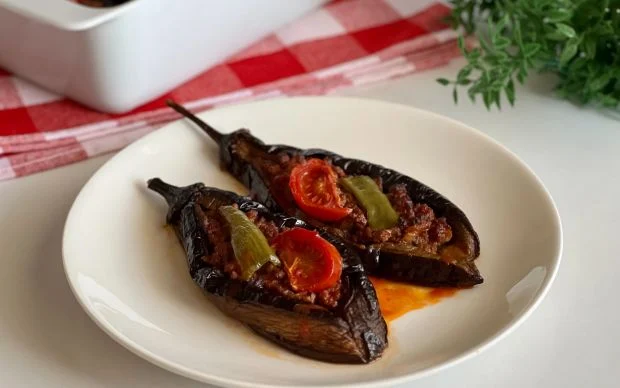

|  | Kızartmadan: Fırında Karnıyarık Tarifi |
| Fırında karnıyarık, Türk mutfağının sevilen ve doyurucu bir yemeğidir. Patlıcanların fırında pişirilmesiyle başlayan bu tarifte, kıyma ve baharatlarla hazırlanan iç harç, patlıcanların içine doldurulur ve üzerleri domates ve biber dilimleriyle süslenir. Sosuyla birlikte fırına verildiğinde, kıymalı harç ve sebzelerin lezzeti birbirine geçer ve enfes bir aroma ortaya çıkar. Karnıyarık, sulu yemek tarifleri arasında öne çıkan bir lezzettir. Yanında servis edilen cacık ve pirinç pilavıyla birlikte akşam yemeklerinize doyurucu ve lezzetli bir alternatif sunar. Şimdiden afiyetler! |